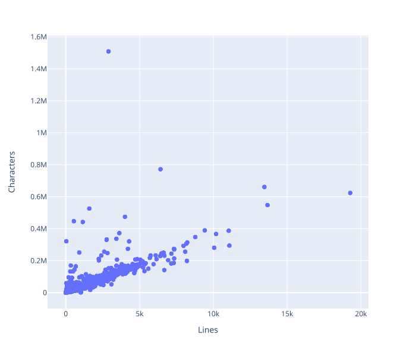
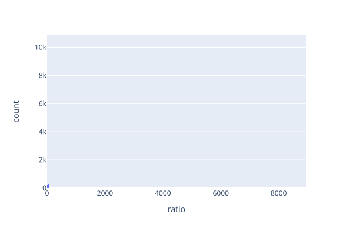
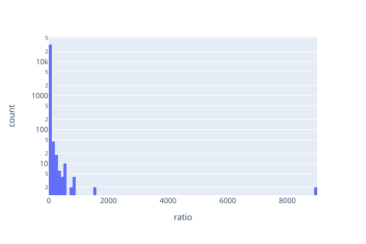
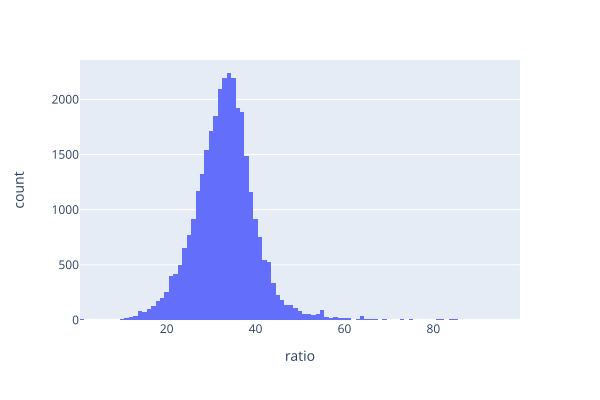

Chapter 2: Basic Tools
DRAFT
- Store small datasets in tidy CSV files.
- Use Unix command-line tools for simple data collection and filtering.
- Use NumPy and Pandas to process tabular statistical data.
- Use method chaining to create data pipelines.
- If you're writing a loop to process a table, you're doing something wrong.
- Use Plotly Express to create simple plots.
Terms defined: aggregation, alias, Boolean, broadcast, comma-separated values, dataframe, filter, header row, histogram, key, method chaining, Not a Number, Not Available, null, outlier, property, raster graphics, relational database, reproducible research, Scalable Vector Graphics, slice, SQL, tidy data, vector graphics
- Motivating problem: how big is the average Python package?
- What do we mean by “big”?
- Count lines and characters for now
- What do we mean by “average”?
- Analyze the packages on this computer to start
- What do we mean by “big”?
How can we get some data?
- Where is Python installed?
import sys
print('\n'.join(sys.path))
/anaconda3/lib/python37.zip
/anaconda3/lib/python3.7
/anaconda3/lib/python3.7/lib-dynload
/anaconda3/lib/python3.7/site-packages
- The blank at the start is the empty string, which means “current directory”
- Use the shell to find and display Python file sizes
find /anaconda3 -name '*.py' -exec wc -l -c {} \;
27 877 /anaconda3/bin/rst2xetex.py
26 797 /anaconda3/bin/rst2latex.py
67 1704 /anaconda3/bin/rst2odt_prepstyles.py
26 720 /anaconda3/bin/rst2html4.py
35 1145 /anaconda3/bin/rst2html5.py
...
- We could convert this output to comma-separated values (CSV) with command-line tools like awk or sed
- But since we’re using Python anyway…
import sys
print('Lines,Characters,Path')
for line in sys.stdin:
fields = line.split()
print('{},{},{}'.format(*fields))
- Run it as shown below
- Break lines to make commands more visible (and to prevent long lines)
find /anaconda3 -name '*.py' -exec wc -l -c {} \; \
| python wc2csv.py \
> python-local-package-size.csv
cat python-local-package-size.csv
Lines,Characters,Path
27,877,/anaconda3/bin/rst2xetex.py
26,797,/anaconda3/bin/rst2latex.py
67,1704,/anaconda3/bin/rst2odt_prepstyles.py
26,720,/anaconda3/bin/rst2html4.py
35,1145,/anaconda3/bin/rst2html5.py
...
- This is tidy data
- Each column contains one statistical variable (i.e., one property that was measured or observed)
- Each different observation is in a different row
- There is one table for each set of observations
- If there are multiple tables, each table has a column containing a unique key so that related data can be linked
How can we analyze tabular data?
- There’s a lot of tabular data in the world
- People want to do a lot of complex things with it, so Python’s tools can be bewildering at first
- Built-in lists and the
arraymodule - NumPy provides multidimensional arrays
- Pandas provides dataframes with named columns for tidy data
- Built-in lists and the
- We will use a small subset of Pandas
- Gives us tables whose columns can have different datatypes
- Access columns by name
- Access rows by index
- Load our CSV data into memory and have a look
import pandas
data = pandas.read_csv('python-local-package-size.csv')
print(data)
Lines Characters Path
0 27 877 /anaconda3/bin/rst2xetex.py
1 26 797 /anaconda3/bin/rst2latex.py
2 67 1704 /anaconda3/bin/rst2odt_prepstyles.py
...
33243 256 10135 /anaconda3/share/glib-2.0/codegen/codegen_main.py
33244 431 17774 /anaconda3/share/glib-2.0/codegen/dbustypes.py
33245 3469 206544 /anaconda3/share/glib-2.0/codegen/codegen.py
[33246 rows x 3 columns]
- The header row tells us the names of the columns
- We can get these names using the dataframe’s
columnsproperty- Not a method call
print(data.columns)
Index(['Lines', 'Characters', 'Path'], dtype='object')
- Result is an
Indexobject containing the columns’ names and other information - Its
valuesproperty contains just the names
print(data.columns.values)
['Lines' 'Characters' 'Path']
- We normally import Pandas using an alias called
pdto save a few characters of typing and (more importantly) make code a little easier to read - Re-load our data that way
- And use a more meaningful name than
data - Then select a column by name
- And use a more meaningful name than
import pandas as pd
packages = pd.read_csv('python-local-package-size.csv')
print(packages['Path'])
0 /anaconda3/bin/rst2xetex.py
1 /anaconda3/bin/rst2latex.py
2 /anaconda3/bin/rst2odt_prepstyles.py
...
33243 /anaconda3/share/glib-2.0/codegen/codegen_main.py
33244 /anaconda3/share/glib-2.0/codegen/dbustypes.py
33245 /anaconda3/share/glib-2.0/codegen/codegen.py
Name: Path, Length: 33246, dtype: object
- The line at the end tells us:
- The name of the column we selected
- How many records there are
- The column’s data type
- We can select several columns at once by giving a list of names
- Which results in double square brackets
- Outer brackets mean “we’re selecting something”
- Inner ones means “we’re providing a list to specify what we’re selecting”
print(packages[['Lines', 'Characters']])
Lines Characters
0 27 877
1 26 797
2 67 1704
...
33243 256 10135
33244 431 17774
33245 3469 206544
[33246 rows x 2 columns]
- What if we want to select a row?
print(packages[0])
Traceback (most recent call last):
File "/anaconda3/lib/python3.7/site-packages/pandas/core/indexes/base.py", line 2657, in get_loc
return self._engine.get_loc(key)
File "pandas/_libs/index.pyx", line 108, in pandas._libs.index.IndexEngine.get_loc
File "pandas/_libs/index.pyx", line 132, in pandas._libs.index.IndexEngine.get_loc
File "pandas/_libs/hashtable_class_helper.pxi", line 1601, in pandas._libs.hashtable.PyObjectHashTable.get_item
File "pandas/_libs/hashtable_class_helper.pxi", line 1608, in pandas._libs.hashtable.PyObjectHashTable.get_item
KeyError: 0
During handling of the above exception, another exception occurred:
Traceback (most recent call last):
File "pandas-select-row-fail.py", line 4, in <module>
print(packages[0])
File "/anaconda3/lib/python3.7/site-packages/pandas/core/frame.py", line 2927, in __getitem__
indexer = self.columns.get_loc(key)
File "/anaconda3/lib/python3.7/site-packages/pandas/core/indexes/base.py", line 2659, in get_loc
return self._engine.get_loc(self._maybe_cast_indexer(key))
File "pandas/_libs/index.pyx", line 108, in pandas._libs.index.IndexEngine.get_loc
File "pandas/_libs/index.pyx", line 132, in pandas._libs.index.IndexEngine.get_loc
File "pandas/_libs/hashtable_class_helper.pxi", line 1601, in pandas._libs.hashtable.PyObjectHashTable.get_item
File "pandas/_libs/hashtable_class_helper.pxi", line 1608, in pandas._libs.hashtable.PyObjectHashTable.get_item
KeyError: 0
- Pandas error messages aren’t particularly readable
- Pandas doesn’t allow us to select rows by numeric index
- Ambiguous, since
1could mean “first column” rather than “first row”
- Ambiguous, since
- Instead, use a property of the dataframe called
iloc(for “indexed location”)
print(packages.iloc[0])
Lines 27
Characters 877
Path /anaconda3/bin/rst2xetex.py
Name: 0, dtype: object
-
Displays a two-column table with keys and values
- Count from zero (for surprising reasons)
-
We can use a slice to select multiple rows
- If you’re writing a loop to process a table, you’re doing something wrong
print(packages.iloc[0:5])
Lines Characters Path
0 27 877 /anaconda3/bin/rst2xetex.py
1 26 797 /anaconda3/bin/rst2latex.py
2 67 1704 /anaconda3/bin/rst2odt_prepstyles.py
3 26 720 /anaconda3/bin/rst2html4.py
4 35 1145 /anaconda3/bin/rst2html5.py
- We can mix names and numbers to select subsections by column and then row
- Don’t need
ilocin this case because selecting by column gives us back a one-dimensionalSeriesobject that interprets an integer index the way we want
- Don’t need
print(packages['Characters'][0:3])
0 877
1 797
2 1704
Name: Characters, dtype: int64
- Can also select by row and then column using
iloc- But indexing out of order makes code harder to read, so don’t do this
print(packages.iloc[0:3]['Characters'])
0 877
1 797
2 1704
Name: Characters, dtype: int64
How can we visualize what’s in a dataframe?
matplotlibis the most widely used plotting module for Python, but is fairly low-level- Plotly Express is newer and better suited to creating graphics for browsers
- Usually import using the alias
px
- Usually import using the alias
- Use this to create a simple scatter plot
- The figure object’s
showmethod runs a local server and opens the image in the browser for viewing - Its
write_imagemethod saves it as a file - We put the generated figure in a
figuressub-directory to avoid clutter - And use SVG because vector graphics resizes better than raster graphics
- The figure object’s
import pandas as pd
import plotly.express as px
packages = pd.read_csv('python-local-package-size.csv')
fig = px.scatter(packages, x='Lines', y='Characters')
fig.show()
fig.write_image('scatter-lines-characters.svg')

How can we do calculations with dataframes?
- Best way to explore Pandas is by example
- Since we don’t know what answers to expect from calculations using the package data, construct a small example that we can check while we explore
import pandas as pd
example = pd.DataFrame(data=[[ 1, 2, 3],
[ 10, 20, 30],
[100, 200, 300]],
columns=['left', 'middle', 'right'])
print(example)
left middle right
0 1 2 3
1 10 20 30
2 100 200 300
- Break this down:
pdis the alias for PandasDataFrameis the kind of object we want to createdatais a list-of-lists with the values we want in our dataframecolumnsis the names we want to give the columns- We could provide
dataandcolumnsin the opposite order and everything would still work because we’re naming them explicitly - Result is three columns and three rows
- We can do arithmetic on entire columns
print(example['middle'] + example['right'])
0 5
1 50
2 500
dtype: int64
- If we use a plain old number it is automatically broadcast to the size of the column
print(7 * example['left'])
0 7
1 70
2 700
Name: left, dtype: int64
- Sums, averages, and other functions that turn many values into one are called aggregations
count: number of elements (excludingNaN)describe: descriptive statisticsfirst: first valuelast: last valuemax: largest valuemean: average valuemin: least valuenth: \( n^{th} \) valuesem: standard error of the meansize: group size (includingNaN)std: standard deviationsum: sum of valuesvar: variance
Not a Number, Not Available, Null, and None
NaN stands for “Not a Number”, a special value used to represent things like
0/0 Kahan1997. Despite the similarity in their names, it is not
the same thing as NA (Not Available), which is a
placeholder for missing values. To make things more confusing, SQL (the standard language for querying relational databases) uses null instead of NA to signal missing data, while many
programming languages use null to mean “a reference that doesn’t refer to
anything”. Python uses None instead of null, but we must be careful when
reading and writing data to distinguish between empty strings, missing values,
and the country code for Namibia.
- Use the method
aggto calculate aggregates- Give it the name of a function as a string
print(example.agg('sum'))
left 111
middle 222
right 333
dtype: int64
- The sum of column
leftis 111, of columnmiddleis 222, and ofrightis 333- Once again
dtypeis the data type
- Once again
- We can calculate several aggregate values at once by giving
DataFrame.agga list of function names- Exercise: is this more efficient or not?
print(example.agg(['sum', 'mean']))
left middle right
sum 111.0 222.0 333.0
mean 37.0 74.0 111.0
How can we select subsets of data?
- Suppose we want to look at the low values in the data
- Do this by filtering data and calculating values for the rows we have kept
- “Keep” would have been a better name than “filter”, but we’re stuck with it
- Create another small dataframe to demonstrate
import pandas as pd
colors = pd.DataFrame(columns=['name', 'red', 'green', 'blue'],
data=[['yellow', 1.0, 1.0, 0.0],
['aqua', 0.0, 1.0, 1.0],
['fuchsia', 1.0, 0.0, 1.0]])
print(colors)
name red green blue
0 yellow 1.0 1.0 0.0
1 aqua 0.0 1.0 1.0
2 fuchsia 1.0 0.0 1.0
- We know how to select the
redcolumn
red = colors['red']
print(red)
0 1.0
1 0.0
2 1.0
Name: red, dtype: float64
- Now let’s see where values are 1.0 and where they aren’t
has_red = (red == 1.0)
print(has_red)
0 True
1 False
2 True
Name: red, dtype: bool
- The expression
(red == 1.0)is no different from(red + 3), except the result is Boolean instead of numeric - If we use a Boolean vector as an index, the result is a smaller table containing only the rows where the index was
True- But just as we had to use
.iloc[...], we have to use.loc[...](for “location”)
- But just as we had to use
rows_with_red = colors.loc[has_red]
print(rows_with_red)
name red green blue
0 yellow 1.0 1.0 0.0
2 fuchsia 1.0 0.0 1.0
- So we can calculate the average red, green, and blue for all colors for the whole table:
print(colors.agg('mean'))
red 0.666667
green 0.666667
blue 0.666667
dtype: float64
- Or select only those colors that contain some red and calculate the average for them:
print(rows_with_red.agg('mean'))
red 1.0
green 0.5
blue 0.5
dtype: float64
- Creating temporary variables is unnecessary: we can index the table directly
- Though this can be hard to read because the order of operations doesn’t match left-to-right reading order
print(colors.loc[colors['red'] == 1.0].agg('mean'))
red 1.0
green 0.5
blue 0.5
dtype: float64
- This style of programming is called method chaining
- Each operation like
locandaggcreates a new object - We immediately call a method of that new object
- Then call a method of the object that method returns, and so on
- Each operation like
- Behind the scenes, Pandas re-uses most of the data rather than copying it to make things faster
How are lines and characters in Python files related?
- Created a scatter plot earlier
- Construct a histogram to see how many outliers there are
- Add width and height for the print version
import pandas as pd
import plotly.express as px
packages = pd.read_csv('python-local-package-size.csv')
packages = packages[packages['Lines'] > 0]
packages['ratio'] = packages['Characters'] / packages['Lines']
fig = px.histogram(packages, x='ratio')
fig.show()
fig.write_image('hist-ratio-unscaled.svg', width=600, height=400)

- That’s not very informative
- A few large values near x=0
- But a few very small values that go up over x=8000
- Plot the logarithm of the ratio to show things more clearly Figure 2.3
fig = px.histogram(packages, x='ratio', nbins=100, log_y=True)
fig.show()
fig.write_image('hist-ratio-scaled.svg')

- Play with a threshold for a bit and discover that less than 0.3% of records are above 100 characters per line
- Plot all the values except these without logarithmic scaling
- Report how many were excluded so that readers know they’re not seeing all the data
print(f"Excluding {len(packages[packages['ratio'] > 100])}/{len(packages)} data points")
fig = px.histogram(packages[packages['ratio'] <= 100], x='ratio', nbins=100)
fig.show()
fig.write_image('hist-ratio-most.svg')
Excluding 92 data points

- Data is easier to see
- But what (if anything) does it mean?
- For that, we need some statistics
Summary
- We have some insights, but we have sinned
- Some of our analysis involves manual steps (shell commands that aren’t written down anywhere)
- Our scripts are not documented
- Which makes life harder for the next person to work on this project
- Which will probably be us a few months from now
- Data isn’t described either
- What does it mean? When and where was it collected?
- And our statistics could use some work too
- “Play with the threshold” is a danger sign
- In short, this is not reproducible research
- The next few lessons fix these shortcomings
Exercises
Is average meaningful?
Is “average” a meaningful statistic for a [one-sided distribution][one-sided-distribution] with a [long tail][long-tail]? What would be a better way to characterize this distribution?
Size of Python source files
Write a short Python script to find Python source files and get their size.
(Hint: use the [glob][glob-py] module to find files.)
Better plots
Add meaningful axis labels to all of the plots in this chapter.
Characters per line
What does the distribution of characters per line tell you about these files? How does the ratio for your own files compare?
Empty Python files
Why do empty Python files exist? Why do some files have such very long lines? Do any files have some characters but zero lines? How should we represent these in our visualization?
Dissecting the find command
Use explainshell to dissect the find command used to get Python file sizes.
Why is the semi-colon needed, and why does it have to have a backslash in front of it?